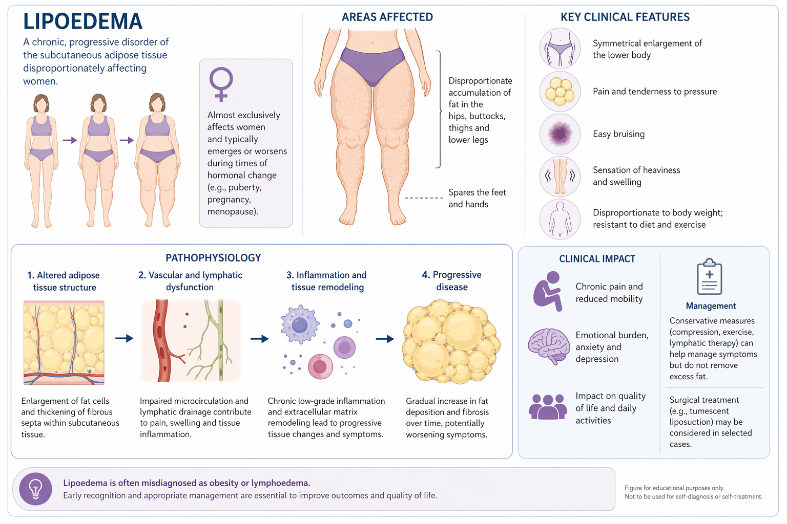
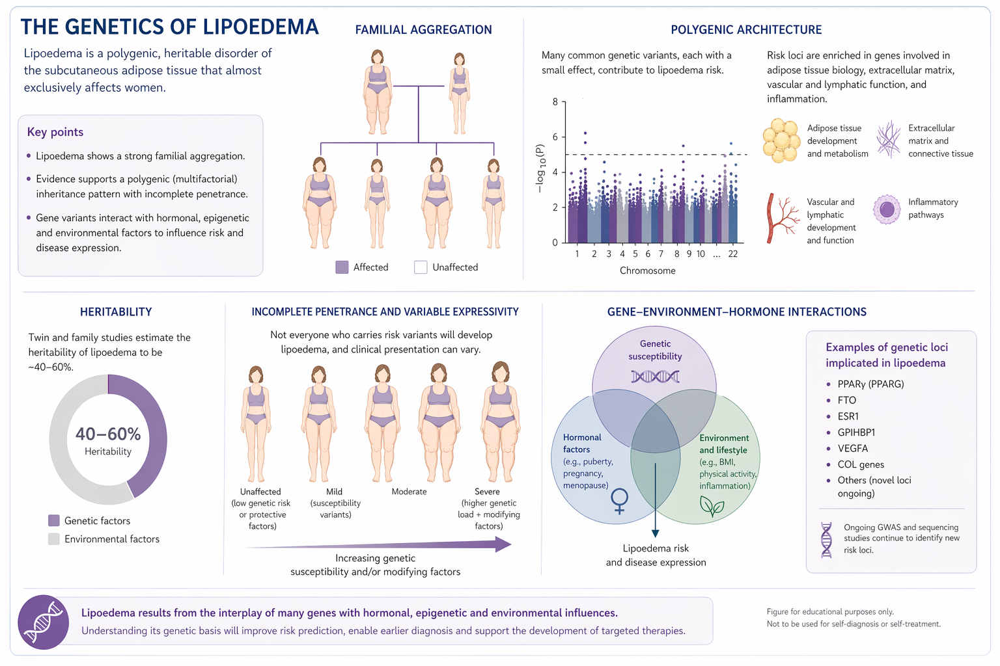
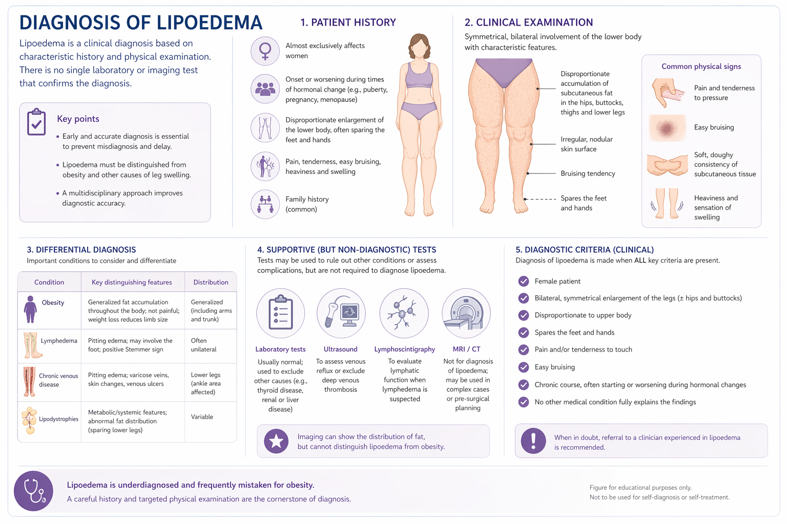

An open lipoedema research atlas for literature surveillance, evidence mapping, biomarkers, and omics overlay · Loading corpus…
Created by Selin Cildir — Centre for Cancer Biology, Adelaide University |
0009-0003-5456-3335
Browse Papers: Search and filter the active LipoScope corpus. Paper cards open annotated aims, methods, findings, figure lookup, and PubMed/DOI links. Your local additions and hidden-paper choices update this view immediately.
🔍
Filter:
Analytics: The first chart set summarizes the live PubMed landscape for lipedema/lipoedema. The lower chart set summarizes your currently visible LipoScope corpus, so it changes when you add, hide, restore, or refresh literature.
🔴 Live
The top charts track the live PubMed landscape for lipedema/lipoedema using lipedema[tiab] OR lipoedema[tiab]. The visible-corpus charts below update immediately when users add, hide, restore, or expand papers.
📁 Research Topics PubMed live
📅 Publication Timeline PubMed live ·
📋 Study Types PubMed live
📁 Visible LipoScope Corpus
0 papers
🍩 Topic Distribution visible corpus
📈 Year Distribution visible corpus
🏷️ Topic Cloud — click to filter PubMed live counts
📰 Top Journals PubMed live
Research Atlas: Converts the PubMed-wide lipoedema evidence source into a dynamic research map. The knowledge graph, candidate ranking, mechanism explorer, local omics overlay, research gaps, and minimum dataset builder are recomputed from the same lipoedema-focused PubMed layer, so these sections are not narrowed by your local Browse curation.
Lipoedema Research Intelligence Atlas
Converts the lipoedema literature into an entity-level knowledge graph, biomarker prioritizer, local omics overlay, research gap engine, and minimum dataset builder.
PubMed-wide Atlas: loading cached records and checking for updates...
◆
Corpus Status
LipoScope is an open lipoedema research atlas that combines curated literature, live surveillance, evidence mapping, entity-level knowledge graphs, and local omics overlay for hypothesis generation without registration or server-side data upload.
⌬
Knowledge Graph
Clickable network linking lipoedema topics, genes, biomarkers, pathways, clinical phenotypes, and mechanisms from the PubMed-wide lipoedema evidence source. Each node opens all supporting papers currently available to the app.
◎
Candidate Gene and Biomarker Prioritizer
Ranks lipoedema-associated genes, proteins, pathways, and biomarkers using PubMed-wide lipoedema frequency, evidence quality, topic breadth, human-study support, and PubMed-refresh signals.
↯
Mechanism Explorer
Structured, PubMed-updated hypotheses connecting molecular biology, adipose tissue, lymphatics, pain, imaging, and treatment outcomes, with explicit gaps, falsifiable predictions, and next-study patterns.
⇄
Local Omics Overlay
Upload or paste a gene, variant, proteomics, transcriptomics, or biomarker list. Matching is performed locally against the PubMed-wide lipoedema evidence source; no uploaded data leaves the device.
Upload CSV/TSV
Recognized columns include gene, symbol, biomarker, variant, logFC, pvalue, padj, score, and notes. First column is used if no gene-like header is found.
Paste Gene List
≠
Phenotype and Differential Diagnosis Matrix
Research and education view comparing lipoedema with obesity, lymphoedema, Dercum disease, and lipodystrophy. This is not a diagnostic tool.
△
Research Gap Generator
Prioritizes field-level gaps and study opportunities from the PubMed-wide lipoedema evidence source, including weak evidence areas, missing cross-disciplinary links, and PubMed-detected emerging domains.
☷
Lipoedema Minimum Dataset Builder
A proposed common data dictionary for future lipoedema studies, designed to make cohorts, omics studies, imaging studies, and interventions easier to compare.
Live Search: Query PubMed or Google Scholar from inside LipoScope. PubMed searches are scoped to lipedema/lipoedema, and Auto-Discovery imports only records that mention lipedema/lipoedema in the title or abstract.
Live Literature Search Live
Search PubMed (NIH) or Google Scholar in real time. Results are fetched fresh and not stored locally. Requires an internet connection.
🔬
PubMed (NIH)
Full-text indexed MEDLINE database. Returns up to 20 recent results scoped to lipedema/lipoedema.
🎓
Google Scholar
Broad academic search across all disciplines. Opens Google Scholar directly for your query.
Tips: Use PubMed for peer-reviewed results — automatically scoped to lipedema/lipoedema. Click + Add to Browse on any result to save it as a card with generated aims, methods, and findings. Use Google Scholar to find grey literature, preprints, and conference proceedings.
🔍 Auto-Discovery Engine Auto
Automatically search PubMed and Scopus across all 10 research topics, while enforcing a strict lipedema/lipoedema disease scope. Topic terms such as lymphatic, adipose, hormone, or fibrosis are only accepted when the record also discusses lipedema/lipoedema. Results are classified from title + abstract text and deduplicated before import.
Select/Deselect All
Remove Duplicates: scans user-added papers against the built-in/default corpus by PMID and normalized title, removes duplicate local records, keeps the curated default record, then refreshes Browse and visible-corpus Analytics. PubMed-wide Atlas tools remain anchored to the full lipoedema evidence layer.
Initialising…
Preparing topic queries…
About: Review LipoScope’s scope, PubMed-wide Atlas logic, database management tools, and optional local profile controls. New visitors start in Public Local Mode with the 211-paper public corpus, while Atlas-level evidence views remain anchored to the broader lipoedema PubMed layer.
SC
LipoScope
Developed by Selin Cildir — Centre for Cancer Biology, Adelaide University.
📊 Live Database Summary PubMed · lipedema[tiab] OR lipoedema[tiab]
These counts are retrieved live from PubMed and reflect papers where lipedema or lipoedema appears in the title or abstract. The "Curated Papers" count reflects your visible Browse workspace. Atlas-level tools use a separate PubMed-wide evidence source: the 211-record public seed plus an automatically refreshed lipoedema-focused PubMed layer. The PubMed-wide Atlas checks PubMed automatically every 12 hours while the app is open.
📖 About This Resource
This interactive literature database was developed to support research into lipoedema (lipedema) — a chronic, painful adipose tissue disorder affecting predominantly women, characterised by bilateral, symmetrical subcutaneous fat deposition in the limbs, accompanied by pain, bruising, and oedema.
The public default Browse collection contains 211 lipoedema/lipedema papers spanning 2009–2026, combining a manually curated seed with a PubMed-expanded metadata layer. Each record includes topic and study-type classification, source links, and figure lookup where full-text access supports it.
The Analytics tab separates the live PubMed landscape from your visible Browse workspace. The Research Atlas, candidate prioritizer, mechanism explorer, local omics overlay, research gap generator, and evidence-based biology figures use the PubMed-wide lipoedema evidence source, so they are not narrowed by hidden papers or locally added records. The Live Search tab lets you query PubMed directly, and papers found can be added to Browse with one click.
🏷️ Research Topic Categories live PubMed counts · lipedema/lipoedema papers only
Counts reflect PubMed papers with lipedema or lipoedema in the title or abstract (lipedema[tiab] OR lipoedema[tiab]), combined with topic-specific keywords also restricted to title/abstract. This field restriction ensures only papers where lipedema is a primary subject are counted, not papers that merely cite it in passing. Last updated: .
🚀 How to Use This App
📚
Browse Papers
Search by keyword across title, authors, journal, or findings. Filter by topic, study type, or year. Click any card to open its full annotated summary with aims, methods and key findings. Use ✕ Hide to remove papers from your view, or ✕ Remove to delete user-added entries.
📊
Analytics
Use the top charts to read the live PubMed landscape for lipedema/lipoedema. Use the lower charts to inspect your visible Browse workspace. The two views are deliberately separated so local curation does not get confused with the whole-field literature signal.
🧭
Research Atlas
Explore the lipoedema knowledge graph, candidate gene/biomarker prioritizer, local omics overlay, differential matrix, research gap generator, dynamic biology figures, and minimum dataset builder. These Atlas views use the PubMed-wide evidence source and refresh from PubMed automatically.
🔴
Live Search
Query PubMed in real time — results are auto-scoped to lipedema/lipoedema. Click + Add to Browse on any result to save it as a card with generated aims, methods, and findings from the PubMed abstract. Use Google Scholar to supplement with grey literature and preprints.
👤 Public Mode & Optional Local Profile
LipoScope opens immediately in Public Local Mode. No registration, login, account, server, or mandatory API key is required. Curated papers, hidden/shown preferences, optional notes, and user-added papers are stored only in your browser. You may optionally set a local profile label to separate browser-local collections on a shared computer. To let a colleague open the same Browse Papers curation, use Share Current Browse View: LipoScope creates a unique link that recreates that Browse setup in their browser without exporting a file. Local profile labels organize your own browser; they are not the sharing key. Atlas, candidate, mechanism, omics, gap, and biology-figure sections still use the PubMed-wide evidence layer and continue their automatic refresh cycle.
Current Profile
?
No profile set
How sharing works: a shared link recreates the same Browse Papers structure for another user. It does not require coding, import/export, or an account. The link does not replace the live PubMed-aware Atlas: Research Atlas sections continue to update from PubMed automatically.
🗂️ Database Management
211Visible Papers
0User Added
0Hidden
Papers you Hide are not permanently deleted — they are stored in your browser and can be restored below.
Papers you Add from Live Search are saved locally in your browser across sessions.
Hiding all default literature lets you curate Browse Papers from a clean slate.
Restoring hidden papers or using Restore 211 Default Corpus brings the public default Browse corpus back.
These controls personalize Browse and visible-corpus Analytics; the PubMed-wide Atlas and evidence-based biology figures continue to use the broader lipoedema evidence layer.
Hidden Papers — restore individually:
No hidden papers.
Welcome to LipoScope. This is an open lipoedema research atlas built to make the literature easier to explore, question, and reuse. You start with 211 curated lipoedema/lipedema papers, then shape the Browse workspace around your own focus: genetics, diagnosis, clinical care, lymphatics, adipose biology, pain, treatment, or any other research angle. You can hide the default corpus and curate from a clean slate, keep the public corpus and expand it with selected PubMed or Google Scholar records, or share the exact same Browse Papers structure with a colleague by sending a shared link. Local labels stay browser-local; shared links recreate the same Browse snapshot in another browser. The Atlas and biology figures stay PubMed-wide, paper figures are only a few clicks away, and the local omics overlay lets you search a target gene or biomarker to see whether it has appeared in the lipoedema literature before.
Welcome to LipoScope
LipoScope brings the lipoedema literature into one practical workspace. You can browse the 211-paper public corpus, filter by topic or study design, open paper summaries and source links, check figures from open-access full text, follow genes and biomarkers through the PubMed-wide Research Atlas, overlay your own gene or biomarker list locally in the browser, and now share the same Browse Papers curation with a colleague by sending a link. Nothing here requires registration, and your local additions stay on your device.
If the default corpus is not the right shape for your project, you can clear it from view and build a focused collection from PubMed, Google Scholar, or your own reading list. You can also keep your own browser-local label for separate collections on a shared computer, while shared links remain the simple way to let another user open the same curated Browse view. That makes the same app useful for a genetics project, a diagnostic review, a clinical service, a treatment-outcome study, or a molecular biology hypothesis.
211-paper public corpus Start with a broad lipoedema/lipedema literature set, then hide, restore, update, or expand it.
Shared Browse links Use Share Current Browse View to recreate the same Browse Papers curation in another browser without import/export or an account.
Paper figures with minimal clicks Open a paper card and use figure lookup to reach available full-text figures and figure pages.
Gene and biomarker checking Paste or upload genes, proteins, variants, or biomarkers and see matching lipoedema papers with supporting links.
PubMed-wide research map Knowledge graph, candidate ranking, mechanisms, gaps, and generated biology figures stay anchored to the full lipoedema evidence layer.
PubMed-wide Atlas: loading cached records and checking for updates...
The PubMed-wide Atlas checks PubMed automatically every 12 hours while the app is open. When new lipoedema/lipedema records are found, the Atlas, candidate table, mechanisms, omics matches, gaps, and generated biology figures recompute from the refreshed evidence layer.
Visual Guides to Lipoedema
Understanding the condition

A broad visual overview of lipoedema: typical distribution, clinical features, pathophysiology, impact, and management context. Use this as an orientation figure, not as a self-diagnosis tool.
Genetic architecture and susceptibility

A research-facing view of familial aggregation, polygenic architecture, heritability, variable expressivity, and gene-environment-hormone interactions. Treat specific loci as research leads unless validated in lipoedema-focused cohorts.
Diagnosis and differential diagnosis

A practical clinical research guide to history, examination, differential diagnosis, supportive tests, and diagnostic criteria. It is educational and should not replace assessment by a clinician experienced in lipoedema.
▶ Lipoedema Biology Explainer Video
From symptom pattern to testable biology
This animated scientific explainer frames lipoedema as a multi-system research problem: sex-hormone timing and inherited susceptibility may interact with adipose remodeling, ECM/fibrosis, lymphatic or vascular dysfunction, inflammation, pain, and treatment-response heterogeneity.
Clinical pattern first: symmetrical limb enlargement, pain, bruising, heaviness, and foot sparing are placed beside the tissue biology they may reflect.
Mechanisms you can test: adipocyte hypertrophy, ECM remodelling, lymphatic or microvascular stress, inflammation, and pain signalling are translated into measurable study domains.
From gene to cohort: candidate genes and biomarkers are treated as leads for matched phenotyping, imaging, serum/adipose assays, and longitudinal treatment outcomes.
▶ Guided App Walkthrough Video
Start With The Literature
Browse papers, filter by research topic, open structured annotations, and jump directly to PubMed, DOI, or figure lookup.
Filters
Structured paper cards
Open paper aims · methods · findings · figures
Trace provenance PubMed · DOI · Scholar · citations
Dynamic corpus add, hide, restore, export
Read The Field Dynamically
Analytics separates the live PubMed landscape from the active LipoScope corpus, so users can see both the broader field and their current curated working set.
PubMed landscape
Live vs local: separates PubMed growth from the current curated workspace.
Turn Papers Into Hypotheses
The Atlas maps papers to mechanisms, genes, biomarkers, pathways, evidence strength, research gaps, and minimum dataset fields for future cohort design.
1. PapersPubMed and curated records become structured claims, entities, methods, and outcomes.
→
2. MechanismsClaims are grouped into adipose, lymphatic, ECM, hormone, pain, and genetics pathways.
→
3. Testable StudiesGaps become cohort designs, omics panels, minimum datasets, and validation questions.
PubMed-wide Atlas: graph, candidate prioritizer, mechanism explorer, omics overlay, and research gaps recompute from the same lipoedema evidence source.
Follow Evidence To Papers
Atlas views keep claims attached to clickable supporting papers, figure lookup, source links, candidate entities, and study-design gaps.
Question: Which mechanisms connect lymphatics and pain?
Evidence trail: ranked papers, structured findings, limits, and clickable provenance.
Figure mode: open-access figure lookup from paper records.
Study mode: cohort variables, controls, endpoints, and minimum dataset fields.
Use It As A Living Research Workspace
New users can stay in the default public view. Researchers can optionally use local labels, add papers, hide records, share a curated Browse view by link, save a shared view under a new local label, export bundles, and return to the default curated view at any time.
Public GitHub Pages build
No registration opens immediately for readers and reviewers.
Local profile optional organize browser-local collections without uploading private notes.
Shared Browse links send a link so another user opens the same curated Browse structure.
Share or export
Atlas stays live: shared Browse links do not turn off the PubMed-aware Atlas refresh cycle.
Reset: return to default curated public view anytime.
1 / 5
🔗 Research, Clinical, and Community Resources
Lipedema Foundation
High-quality research and education hub with funded research, clinician guides, registry information, resources, and current disease biology framing.
Specialized archive of lipedema publications. Useful for checking whether a paper, topic, or older citation is already captured outside PubMed-only searches.
This mechanism map is generated from the PubMed-wide lipoedema evidence source. Mechanism order, counts, leading entities, and support levels update when the automatic PubMed layer refreshes.
Figure 2. Candidate genes and pathway effects
Interpretation: This figure is regenerated from the PubMed-wide lipoedema evidence source, so candidate ranking can change as PubMed adds lipoedema papers. Your local Browse additions or hidden-paper choices do not narrow these scores. AKR1C1 has familial/monogenic support in the literature. VEGFA, GRB14, COBLL1, CPE and several transcriptional candidates appear in GWAS or inferred phenotype studies. RAS-MAPK, ECM, WNT, TGFB, inflammatory cytokines, and lymphatic-development genes are best treated as pathway hypotheses unless the refreshed evidence map shows direct lipoedema-specific support.
Figure 3. Research translation map
This translation map is generated from the PubMed-wide lipoedema evidence source used by the Atlas tools. The counts, top signals, and suggested next-study pattern update after PubMed refresh.
 0009-0003-5456-3335
|
Centre for Cancer Biology · Adelaide University
0009-0003-5456-3335
|
Centre for Cancer Biology · Adelaide University